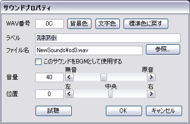

| 画面構成 |
|---|
| サウンドプロパティ画面 |
サウンドプロパティ画面では、サウンドに対する様々な属性を設定・変更することができます。

現在編集しているサウンドの番号（00〜ZZ）です。
[WAV]タブで表示される行の背景色と文字色を変更します。よく似たサウンドごとに同系色を割り当てておくと、[WAV]タブでの視認性が良くなります。譜面への影響や音的効果は一切ありません。
サウンドに対して、好きな名前をつけることが出来ます。自分がわかりやすい名前をつけておくと、譜面の編集が行いやすくなります。譜面への影響や音的効果は一切ありません。
サウンドのファイル名を記入します。[参照...] ボタンを押下すると、ファイル選択ダイアログでファイルを選択することができます。ファイル名は、編集中の譜面（DTXファイル）の置かれる位置からの相対パスで記されます（絶対パスでの記述も可能です）。
※なお、編集中の譜面（DTXファイル）がまだ一度も保存されていない状態でサウンドファイルを[参照...]ボタンから選択した場合、表示される ファイル名は絶対パス表記となりますが、譜面（DTXファイル）の初回保存時に、改めてDTXファイルからの相対パスに置換されます。
このWAVセルをBGMサウンドとして扱う場合には、チェックをオンにします。この機能は、[再生]→[現在の位置からBGMのみ再生] 機能を使用した際に、どのWAVセルがBGMサウンドであるかを判別することに使用されます。
サウンドの音量を変更します。数値は （無音）0 〜 100（原音）であり、原音より音量を大きくすることはできないのでご注意下さい。（DirectSoundの仕様…）
サウンドの再生位置を変更します。数値は （左）-100 〜 （中央）0 〜 （右) 100 です。
なお、DTXMania での位置の変更はサウンドの左右の音量を別々に増減することにより実現されますので、ステレオサウンドを使用する場合は見かけ（聞きかけ？）の音が変化する場合があります のでご注意下さい。（例：原音が主に「左」方向でなっているステレオシンバル音を、このサウンドプロパティで「右」位置で鳴らそうとすると、単純に左側の音量が下げられるので、結果として聞こえる音は小さくなってしまいます。これもDirectSoundの仕様…）
現在の設定状態を試聴して確かめることができます。